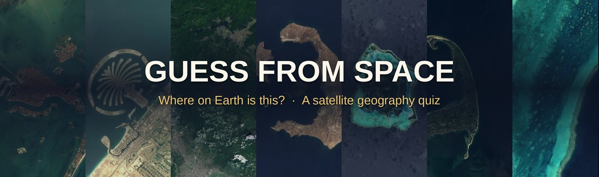

Where on Earth is this?
Guess From Space is a YouTube channel that posts short geography quizzes. Each video starts with a close-up satellite image of a famous place — a World Heritage Site, a volcano, an island, a city — then zooms out while you pick the right answer from three choices.
Watch on YouTube: @guess-from-space
Latest quizzes

Where the images come from
The satellite images are from Sentinel-2 cloudless 2016 by EOX IT Services GmbH (Contains modified Copernicus Sentinel data 2016), licensed under CC BY 4.0. The images are a cloud-free mosaic of 2016, so anything built after that does not appear. This channel is not affiliated with or endorsed by EOX, ESA or the European Commission.
Guess From Space Uploader
The videos are generated and uploaded automatically by a small open-source program, Guess From Space Uploader (source code on GitHub). It uses the YouTube Data API only to upload videos to the channel owner's own YouTube channel and to confirm that it is uploading to the right channel. It is not offered to other users and does not access anyone else's YouTube account.
See the Privacy Policy and Terms of Service for details.